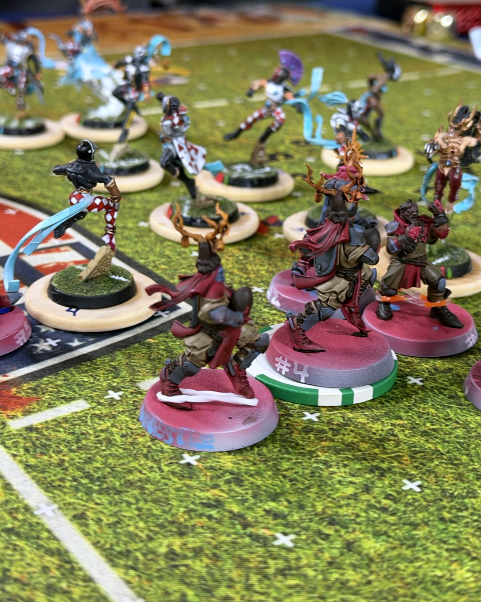
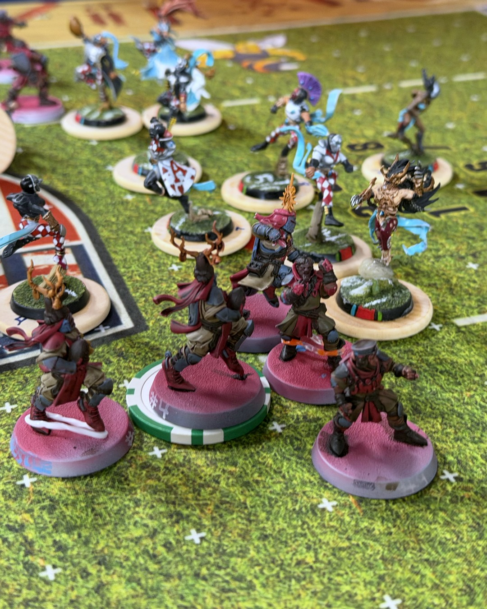

Grenadiers 1–3 Shimmerveil Hurricanes
The Shimmerveil Hurricanes brought a gorgeous High Elf team and one simple plan: run. 💨
Matchday 3 for the Holy Hand Grenadiers, and for once the weather was nice. That just meant their Dragon Princes had perfect footing. Syezelriha opened the scoring early, then Ghertin the Beast added two more. My catchers are fast. His Dragon Princes are faster.
Wherever we stood our ground, it went our way. Alejandra and young Siegbert (a squire!) each took an elf off the pitch for good, and Gracien got one back on turn 9 to make it interesting. But the scoreboard doesn't count bodies. 1–3 final.
It cost us too. RIP Edelgard Rabe, the first Grenadier we've lost for good. On the bright side, Amynta took MVP and cashed it in for Mighty Blow, so the next elf she hits is going to feel it.
Won the fight, lost the game. Very Bretonnian of us. And big credit to the Hurricanes, those card-suit uniforms are 🔥
@warhammerofficial
#bloodbowl #miniaturepainting #bretonnians #warhammercommunity #tabletopgaming